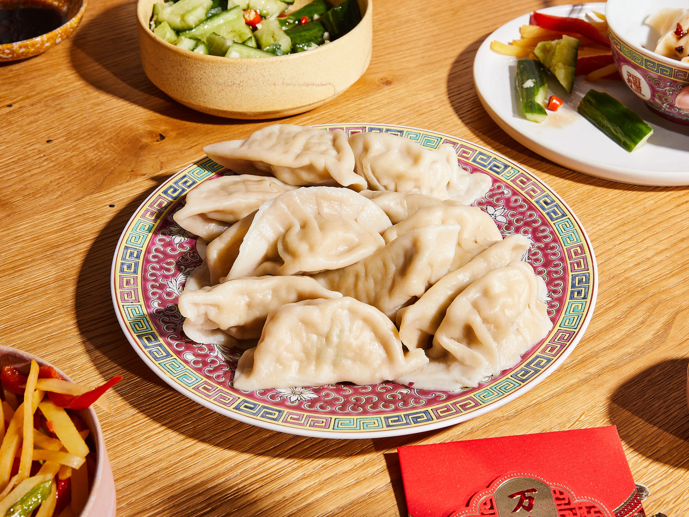
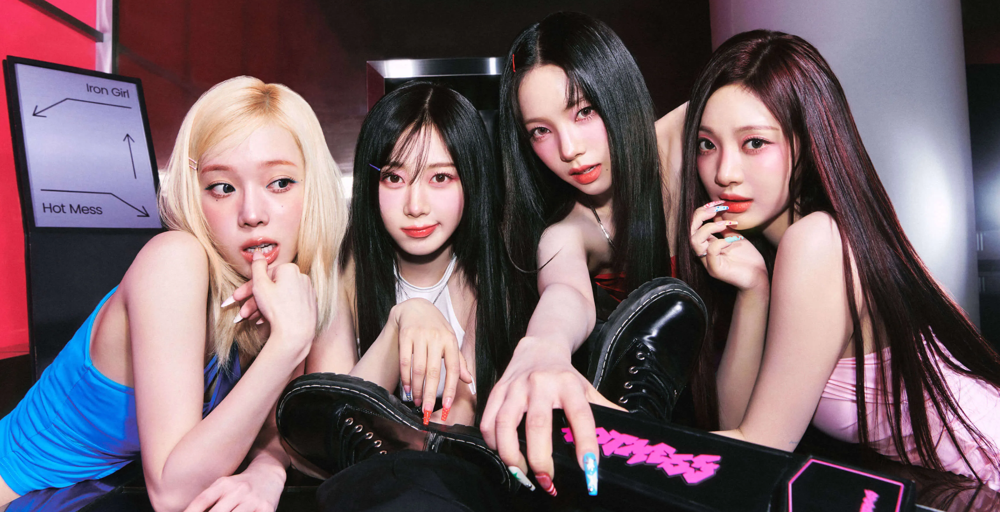

Food:
----------
One thing I love is food. Food is my love language as food
taste amazing!
Here are some of my favorite food:
Gangou Dry Fish Filet

Gangou Dry Fish Filet is a Sichuan-Style dish. To make this dish, the fish would be marinated and dried before stir-frying the fish in fragrant and spicy chili sauce. The fish I usually eat is the the non-spicy version. Still, there is a fragrant aroma and the flavors just burst in the mouth. Sometimes, the fish itself is crispy.
Chinese dumplings (Jiaozi)

Dumplings (Jiaozi) is also one of the most famous chinese
cuisine. Traditional theories state that Jiaozi was invented
during the Eastern Han Dynasty (25-220 AD) by a physician named
Zhongjing Zhang. Other theories speculate that jiaozi was invented
during the Western Han Dynasty (206 BC to 9 AD). It is almost
always eaten during the New Years because the jiaozi is said to
resemble gold and silver ingots. Therefore, people eat them
because they believe it can bring them wealth and good fortune.
Dumplings are meat/veggies/etc. fillings wrapped in dough. I like
dumplings because the meat fillings tasted good. There are many
types of ways you can make jiaozi. You can boiled them in water
(the ones I eat the most), you can fry them, you can steam them,
or you can have them as soup dumplings.
Chinese Stir-Fry Tomato Egg

While scrambled eggs have been eaten in China for thousands of years, tomatoes are only introduced to China is the 20th century with the dish gaining attraction in the 1920s and 1930s. I mostly enjoy the dish because the scrambled eggs taste good with the tomato.
Music:
------------
Music Genre: K-pop

K-pop is a music genre known as Korean Pop Music. K-pop music is commonly associated with high energy performances, synchronized choreography, visually striking music videos, and a blend of musical genres like pop, dance, hip-hop, and R&B. My favorite bands are Izna, Kep1er, Aespa, Illit, and Lesserafim.
Music Genre: Pop

Pop music is characterized as music that is catchy and have
memorable, danceable melodies. My favorite artist in this music
genre is Lana Del Rey. What I like about her songs is that they
are melancholic and nostalgic. My favorite songs from her is Young
and Beautiful.
Music Genre: C-pop
C-pop is a music genre known as Chinese Pop music. The type of
c-pop I listen to is OSTs. Especially, the osts from the
historical c-dramas. The picture above shows the drama "Legend of
Mi Yue". These are the historical c-dramas that I have finished:
Nirvana in Fire (54 episodes), The Princess Weiyoung (54
episodes), Love Like The Galaxy (56 episodes), and the Empress of
China (82 episodes). The OST album I enjoy the most are the ones
from Legend of Mi Yue and Empresses in the Palace (Legend of
Concubine Zhen Huan).
Classical Music

Classical music is European music from the 1600s to the 1900s.
Classical music is spilt into three periods; Baroque Period
(1600-1750), Classical Period (1750-1820), and Romantic Period
(1820-1900). Baroque music is known for its ornate and elaborate
style. A same melody is repeated many times throughout the
movement. Some famous composers of that time is Vivaldi, Handel,
and Bach. The classical music emphasizes balance, clarity, and
elegance. Some famous composers of the era include: Haydn, Mozart,
and Beethoven. Lastly, the Romantic era music is characterized by
its emotional expressiveness, individualism and a focus of
subjective experiences. Famous composers include: Schubert,
Chopin, Brahms, and Tchaikovsky.
Contact Information:
Email: hqiu@wpi.edu
I was born in Shanghai, China in 2009.
 All rights are
reserved
All rights are
reserved